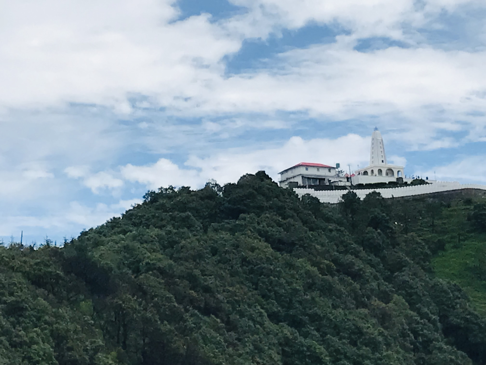

Nature - The Real Heritage of Chail
Chail's heritage is a blend of royal history, colonial architecture, natural beauty, and cultural diversity. It continues to attract visitors who are interested in exploring its historical and cultural treasures.Chail is a picturesque hill station located in the state of Himachal Pradesh, India. It is known for its serene natural beauty, pleasant climate, and rich cultural heritage.The culture of Chail, Himachal Pradesh, is deeply rooted in its natural beauty and traditions. Visitors to the region can experience the rich tapestry of customs, festivals, and cuisine that make it a unique destination in the Indian Himalayas.
The Chail Palace
The Chail Palace is a historic and iconic building located in Chail, Himachal Pradesh, India. It was built in the late 19th century by the Maharaja of Patiala, Bhuri Singh. The palace is set amidst picturesque surroundings and offers a stunning view of the surrounding hills and valleys. It is located at an altitude of 2,444 meters (8,018 feet) above sea level.
The Chail Palace was originally built as a royal residence for the Maharaja, and it was later used as a summer retreat for the British officers during the British colonial era. The palace is known for its architectural beauty and colonial charm, with a combination of British and Indian architectural styles.
Today, the Chail Palace has been converted into a heritage hotel and is open to visitors who can experience the royal history and stay in the luxurious rooms. The palace's lush green gardens and beautiful surroundings make it a popular tourist destination and a peaceful getaway in the Himalayan region.
In addition to the palace, visitors to Chail can explore other attractions such as Chail Wildlife Sanctuary, Kali Temple, and the world's highest cricket ground. Chail is a serene hill station in Himachal Pradesh, and the Chail Palace is one of its most prominent landmarks.

Kali Tibba Mandir
The Kali Temple, also known as Kali Ka Tibba Mandir, is a Hindu temple located in Chail, Himachal Pradesh, India. This temple is dedicated to Goddess Kali, a powerful and fierce form of the goddess Durga. It is a significant religious and cultural landmark in Chail.
The Kali Temple is situated atop a hill known as Kali Tibba, and it offers a magnificent panoramic view of the surrounding valleys and the Shivalik Range. Pilgrims and tourists visit this temple not only for its religious significance but also for the stunning views it provides.
The temple features a beautiful idol of Goddess Kali adorned with garlands, and devotees come to offer prayers and seek blessings. The tranquil and scenic location of the temple makes it a serene place for meditation and spiritual contemplation.
Chail, where the Kali Temple is located, is a charming hill station in Himachal Pradesh and is known for its natural beauty and historical landmarks. Visitors often include the Kali Temple in their itinerary when exploring the area, both for its religious importance and the breathtaking views it offers.

Sidh Baba ka Mandir
The Sidh Baba Ka Mandir in Chail, Himachal Pradesh, India, is a popular and significant temple dedicated to a local deity known as Sidh Baba. This temple is located in the picturesque town of Chail, which is known for its natural beauty and historical landmarks. The Sidh Baba Ka Mandir is not only a place of worship but also a peaceful and scenic destination for those seeking a spiritual and natural retreat. Its tranquil setting amidst the lush forests and the soothing atmosphere make it a must-visit spot in Chail for both religious and nature enthusiasts.